Mao Zedong proclaims the People’s Republic of China from the Gate of Heavenly Peace (Tiananmen), Beijing, 1 October 1949. Public domain, Wikimedia Commons.
Start here · How to study this deck on your own
Three Segments, Self-Checks, and a Narration Button on Every Slide
Click Narration (lower right) or press N to read the Study Buddy notes for any slide. Press N or Esc to close them.
Work through three segments. Each ends with an ungraded self-check: answer from memory, then click to see the answer.
After each self-check comes a Review Question. Write your answer in your Reading Guide before you move on.
The Pierian Spring at the end is required independent study, with two more Review Questions.
Click any image to enlarge it, and click a teal dotted word for a definition. The Mao Stream & Discuss assignment and all due dates are on Canvas.
Recap · Beijing · 1949
Where We Left Off: The Communists Won the Civil War and Inherited a Wrecked Country
On 1 October 1949 Mao proclaimed the People’s Republic from the Gate of Heavenly Peace. Ch. 25 L4 · next ↗
Forty years of war had left inflation, torn-up railroads, blown bridges, and millions of refugees.
Chiang Kaishek had moved his government and much of his army to Taiwan and still claimed to rule China. Ch. 25 L4 · taiwan ↗
Mao’s party had run villages for twenty years, but it had never run a modern city or a national economy.
Sources: Ebrey, Ch. 27, p. 473; Ch. 25, pp. 453–454.
Segment 1 of 3 · 1949–1953
Taking Power
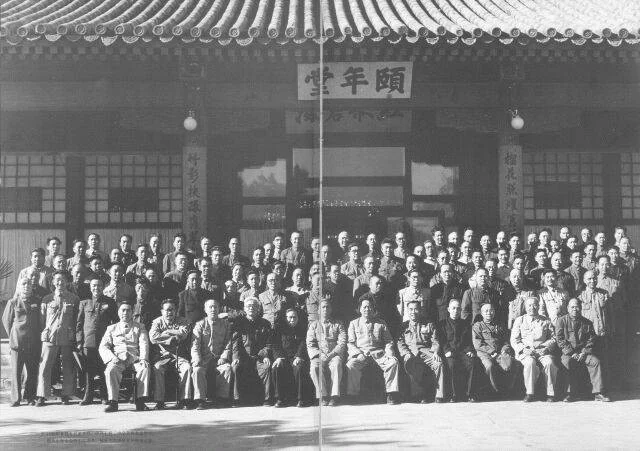
Members of the Communist Party’s Central Committee at their meeting in Beijing, June 1950. Public domain, Wikimedia Commons.
The Communist Party built a new state, took over the cities, and borrowed a plan from Moscow.
This segment teaches the history behind Review Question 1, and it ends with a short self-check and then the question itself.
Q1 concept · Beijing · September 1949
Concept: Mao Promised a “People’s Democratic Dictatorship”
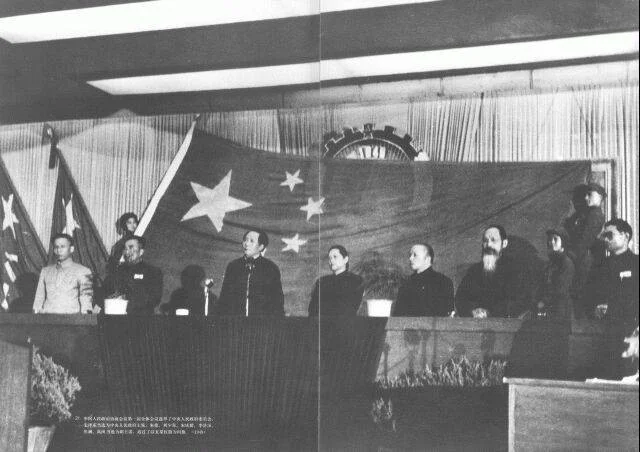
The Chinese People’s Political Consultative Conference elects the new government, Beijing, September 1949. Public domain, Wikimedia Commons.
Concept
People’s democratic dictatorship
Rule in the name of “the people,” meaning workers, peasants, and friendly businessmen, with no rights for those the party called enemies, such as landlords.
“The people” included workers, poor and rich peasants, and the national bourgeoisie.
Landlords and “certain classes of capitalists” were left out.
People’s congresses represented the people, but they met only now and then.
Sources: Ebrey, Ch. 27, p. 473.
Q1 story · Beijing · 1949–1956
The Party, Not the Government, Held the Real Power
A handful of top leaders Mao, Liu Shaoqi, Zhou Enlai, Zhu De, Chen Yun
▼
Politburo about a dozen
▼
Central Committee a few dozen
▼
Province and county committees
▼
Over a million branch committees villages, factories, schools, army units
The army answered to the party’s Military Affairs Commission, not to the government.
By the late 1950s over a million party branches reached into daily life.
By 1953 Mao chaired the party, its army commission, and the state, almost like an emperor.
Names to know
Mao Zedongchairman of the party, the army commission, and the state
Liu Shaoqi (lyou shau-chee)ran economic policy
Zhou Enlai (joe un-ly)premier; ran foreign policy
Zhu De, Chen Yunarmy founder; economic planner
Deng Xiaoping (duhng shyow-ping)joined the top circle in 1956
Sources: Ebrey, Ch. 27, p. 473; Frederick C. Teiwes, “The Establishment and Consolidation of the New Regime,” in The Politics of China, ed. Roderick MacFarquhar (3rd ed., 2011).
Q1 story · Beijing and Shanghai · 1949–1950
Soldiers Cleared the Streets, and the State Tamed Inflation Within a Year
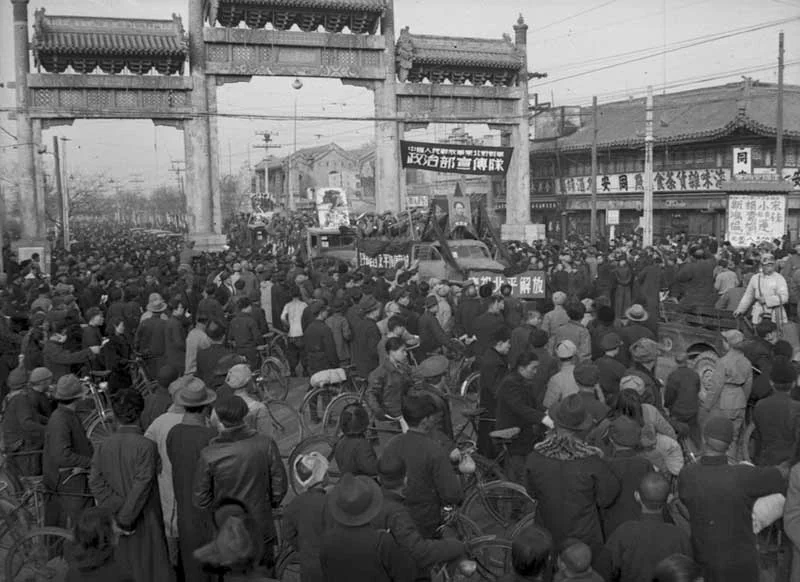
A People’s Liberation Army propaganda truck enters Beijing (then Beiping) under the Xisi archway, February 1949. Public domain, Wikimedia Commons.
Peasant soldiers stopped looting and rounded up beggars, prostitutes, addicts, and petty criminals.
On one night in November 1949, police and cadres closed all 224 brothels in Beijing.
New street committees policed dress, hairstyles, and other signs of “decadence.”
By taking over the banks, the state brought inflation under control within a year.
Write your answer in your Reading Guide before you move on. A strong answer has two parts, power and the economy, and backs each with a named policy and a date.
A soldier of the Chinese People’s Volunteers in Korea, from People’s Pictorial, March 1951. Public domain, Wikimedia Commons.
Less than a year after the founding, China sent an army into Korea and fought the United States to a standstill.
This segment teaches the history behind Review Question 3, and it ends with a short self-check and then the question itself.
Q3 story · The Yalu River · October 1950
Chinese “Volunteers” Crossed the Yalu at Night in October 1950
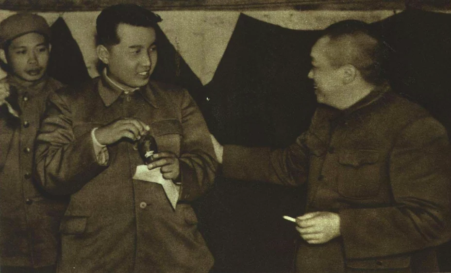
Peng Dehuai, commander of the Chinese People’s Volunteers (left), meets Kim Il-sung, November 1951. Public domain, Wikimedia Commons.
Stalin approved North Korea’s invasion of the South in June 1950.
In October, U.S. troops under the UN flag crossed the 38th parallel and headed for the Yalu, China’s border.
Peng Dehuai’s “volunteers” crossed secretly, with no lights or radios, and in late November drove the Americans south of Seoul.
Over 2.5 million Chinese troops served, with all of China’s tanks and most of its artillery and aircraft.
Names to know
Kim Il-sungleader of North Korea
Peng Dehuai (puhng duh-hwy)commander of the Chinese “volunteers” in Korea
Joseph StalinSoviet leader, who approved the North’s invasion
Sources: Ebrey, Ch. 27, p. 475; Chen Jian, China’s Road to the Korean War (1994).
Q3 story · Panmunjom · 1951–1953
The War Stalled, and the Truce Talks Deadlocked over Prisoners
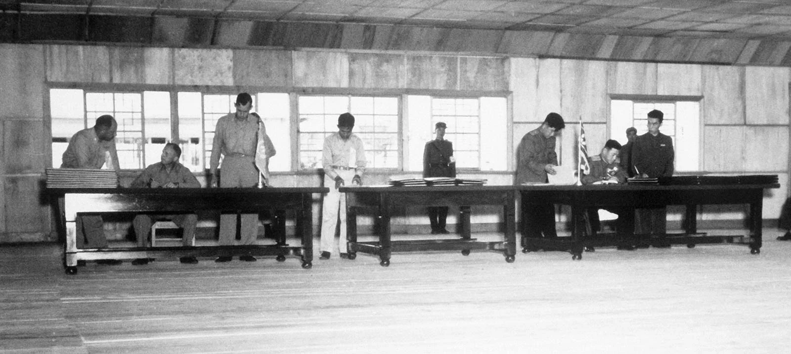
Delegates sign the Korean War armistice at Panmunjom, 27 July 1953. Public domain, Wikimedia Commons.
By mid-1951 the front stalled near the 38th parallel, and peace talks began.
The talks dragged on for two years, mostly over prisoners of war.
China wanted every prisoner sent home, but over 14,000 of about 21,000 Chinese prisoners refused to go back.
An armistice was signed in July 1953; most of those prisoners went to Taiwan.
Sources: Ebrey, Ch. 27, pp. 475–476; David Cheng Chang, The Hijacked War (2020).
Q3 story · Beijing and the Taiwan Strait · 1950–1954
The War Made China “Stand Up,” but It Also Made America China’s Enemy
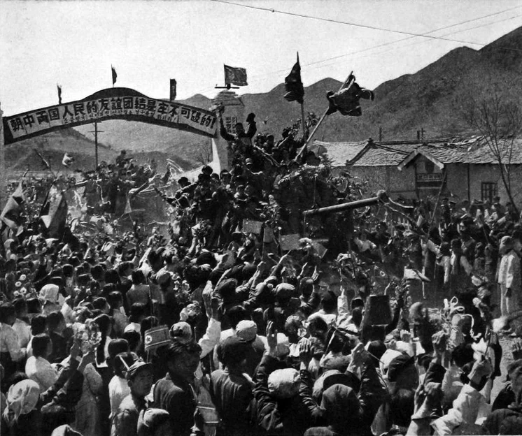
Crowds welcome Chinese soldiers home from Korea; the last units left in 1958. Public domain, Wikimedia Commons.
At home the war gave the party legitimacy: China had beaten back the “imperialists.”
China’s official count was about 360,000 casualties; other estimates run far higher.
The U.S. Seventh Fleet patrolled the Taiwan Strait, and aid flowed to Chiang Kaishek.
A U.S.-led UN embargo cut off trade, so self-reliance became a revolutionary virtue.
Sources: Ebrey, Ch. 27, p. 476.
Q3 story · Beijing and Guangdong · 1951–1952
The War Turned Suspicion Inward, Against Missionaries and “Counterrevolutionaries”
China expelled most remaining Western missionaries and businessmen as possible spies.
A 1951 campaign targeted “counterrevolutionaries,” mostly people who had served the Nationalists.
The party’s own figures later counted about 712,000 executed, with more sent to labor camps.
It also disarmed the people: over 500,000 rifles were collected in Guangdong alone.
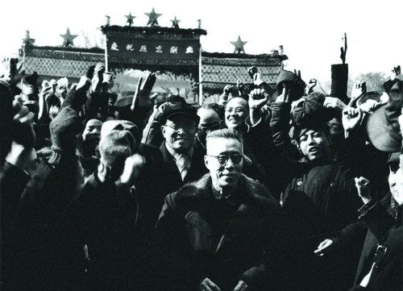
A rally as the party takes over Yenching University, a school founded by American missionaries, Beijing, 1952. Public domain, Wikimedia Commons.
Sources: Ebrey, Ch. 27, p. 476; Yang Kuisong, “Reconsidering the Campaign to Suppress the Counterrevolutionaries,” China Quarterly 193 (2008).
Self-check · Segment 2 · not graded
Quick Check: War in Korea
Answer each question from memory, out loud or on paper, then click Show answer to check yourself. Nothing here is graded or recorded.
1. What happened in October 1950 that brought China into the war?
U.S. troops fighting under the UN flag crossed the 38th parallel and headed toward the Yalu River, China’s border, and Chinese “volunteers” crossed into Korea.
2. Why did the truce talks drag on until 1953?
China wanted all prisoners sent home, but many Chinese prisoners refused; over 14,000 of about 21,000 went to Taiwan.
3. Name two things the United States did to China during and after the war.
It sent the Seventh Fleet into the Taiwan Strait, increased aid to Chiang Kaishek, and pushed a UN trade embargo against China.
4. Who were the main targets of the 1951 campaign against “counterrevolutionaries”?
People who had served in the Nationalist government or army, along with others accused of working against the revolution.
The mutual-aid team of Li Shunda, a model farmer of Xigou village, Shanxi, at work in 1951. Public domain, Wikimedia Commons.
In six years the party took land from landlords, gave it to the poor, and then pooled it all in collectives.
This segment teaches the history behind Review Question 4, and it ends with a short self-check and then the question itself.
Q4 story · North and south China · 1950–1952
Work Teams Gave Every Villager a Class Label and Gave the Poor the Land
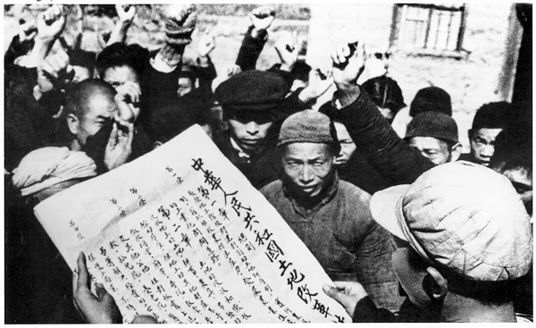
Villagers gather as a man reads out the new Land Reform Law, 1950. Public domain, Wikimedia Commons.
A team of cadres and students moved into the village and made friends with the poor.
It set up a peasant association, collected grievances, and organized “struggles” against the most hated.
Then it sorted everyone into five classes: landlord, rich, middle, and poor peasant, and hired hand. Ch. 25 L1 · concept-classes ↗
Land taken from landlords and rich peasants went to poor families.
Sources: Ebrey, Ch. 27, p. 476; Brian DeMare, Land Wars (2019).
Q4 story · The village · 1950–1970s
Landlords Lost Their Land and Often Their Lives, and the Labels Passed to Their Children
Violence flared, especially when villagers tried to force “landlords” to reveal buried gold.
Historians estimate that one to two million people died in land reform, many of them executed.
Poor peasants gained land, and the party gained their support.
The labels became almost hereditary: a landlord’s grandchildren were still kept from leadership, and poor peasants’ families got preference.
Sources: Ebrey, Ch. 27, p. 476; Frederick C. Teiwes, “The Establishment and Consolidation of the New Regime,” in The Politics of China, ed. Roderick MacFarquhar (3rd ed., 2011).
Q4 story · Hebei and Shanxi · 1950–1956
Mutual-Aid Teams Became Cooperatives, and Cooperatives Became Collectives
Redistribution won support but did not grow more food.
1950–53Mutual-aid teams share labor and tools
1950–53Cooperatives pool land; pay for land and labor
1954–56Collectives pay for labor only
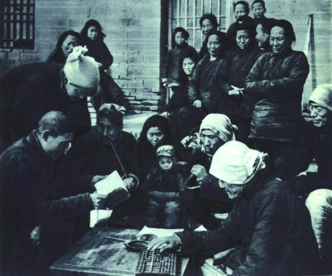
Members of the agricultural cooperative of Geng Changsuo, a model farmer of Wugong village, Hebei, gather over the cooperative’s papers, 1952. Public domain, Wikimedia Commons.
Sources: Ebrey, Ch. 27, p. 476; Edward Friedman, Paul G. Pickowicz, and Mark Selden, Chinese Village, Socialist State (1991).
Q4 story · Every village · 1953
The State Took Over the Grain Trade and Closed the Village Markets
The collective’s harvest
▼
5–10% tax to the state
▼
A meager subsistence ration kept for each person
▼
The state buys the “surplus” at prices it sets
Trade between regions was now a crime: “speculation.”
Rural markets stopped, and many peasants lost their side income from oil presses, paper mills, and rope-making.
Traveling carpenters and craftsmen were tied to their home villages.
Sources: Ebrey, Ch. 27, pp. 476–477.
Q4 story · Xigou village, Shanxi · 1950s
Rural Cadres Became the New Village Elite
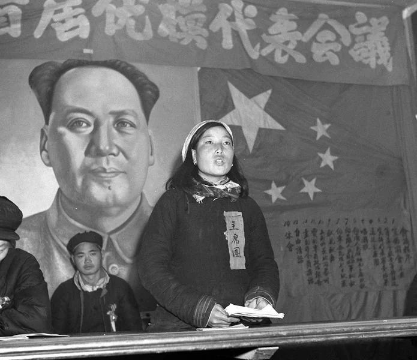
Shen Jilan, a village cadre from Xigou, Shanxi, who won equal pay for women’s field work, reports to a model workers’ meeting, February 1953. Public domain, Wikimedia Commons.
Team and village leaders now decided who worked where and how much grain each family got.
Some were literate middle peasants who knew farming; others were toughs who had denounced landlords with zeal.
A good leader had to hand over a big surplus without losing his team’s trust.
A talented farmer could rise through the party far beyond his village.
Sources: Ebrey, Ch. 27, p. 477; Gail Hershatter, The Gender of Memory (2011).
Q4 story · The countryside · 1950s–1960s
Collectives Opened Schools and Clinics and Cared for Widows and Orphans
Village schools opened, and children everywhere enrolled for at least a few years.
Illiteracy fell dramatically.
Clinics brought basic health care; from the late 1960s, briefly trained “barefoot doctors” gave vaccines and medicines.
Collectives took responsibility for widows and orphans with no one to care for them.
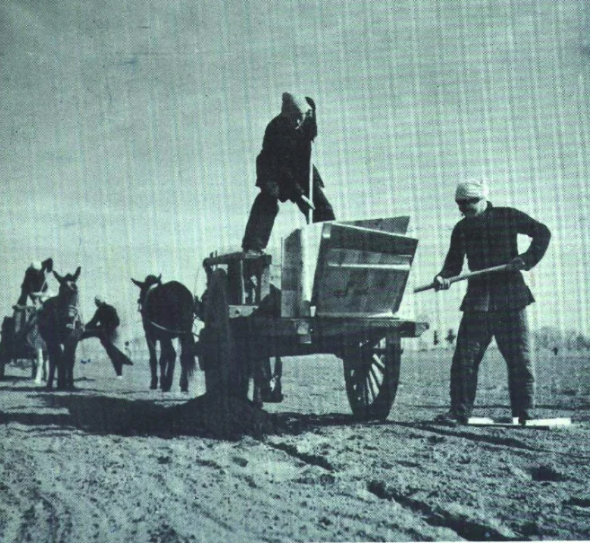
Members of Geng Changsuo’s cooperative at work with a mule cart in the fields of Wugong village, Hebei, 1952. Public domain, Wikimedia Commons.
Sources: Ebrey, Ch. 27, p. 477; Xiaoping Fang, Barefoot Doctors and Western Medicine in China (2012).
Self-check · Segment 3 · not graded
Quick Check: The Village Remade
Answer each question from memory, out loud or on paper, then click Show answer to check yourself. Nothing here is graded or recorded.
1. In land reform, what did the work team do after it had organized the poor and held “struggles”?
It classified every household into one of five classes: landlord, rich peasant, middle peasant, poor peasant, or hired hand.
2. Put the stages in order: collectives, mutual-aid teams, cooperatives.
Mutual-aid teams, then cooperatives, then higher-level collectives (1954–1956), which paid only for labor.
3. After 1953, how did the state get grain from the collectives?
It took a 5–10 percent tax, left a subsistence ration, and bought the “surplus” at prices it set.
4. Who became the new elite of the countryside?
Rural cadres: team and village leaders appointed through the party.
Write your answer in your Reading Guide before you move on. Cover both village life (work, food, markets, services) and relationships (who held power over whom).
A Monument in Tiananmen Square Told the Party’s Story of the Revolution
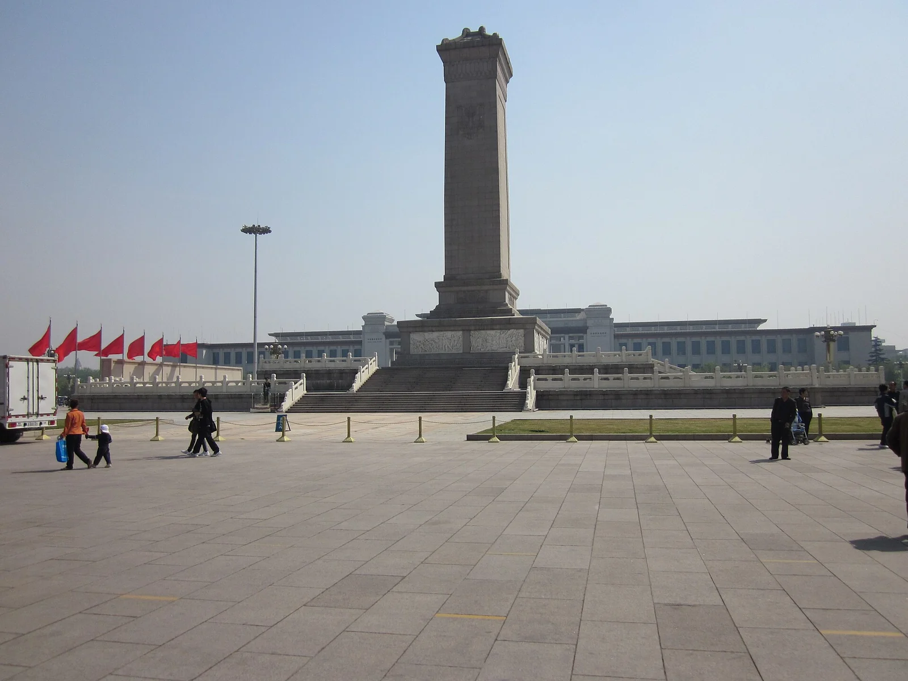
The Monument to the People’s Heroes, Tiananmen Square, Beijing, 2011. Photo: Wikimedia user, CC0, Wikimedia Commons.
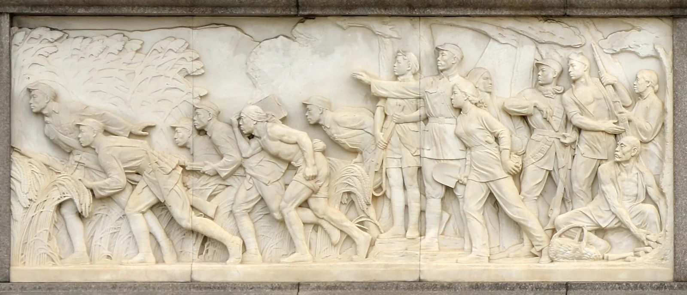
A relief panel at the monument’s base: guerrillas fighting Japan in the fields of tall sorghum. Photo: Francesco Bini, 2024, CC BY-SA 4.0, Wikimedia Commons.
Beijing’s old walls came down, and the space south of the palace became Tiananmen Square.
The monument bears Mao’s words in his own hand; ten reliefs run from the Opium War to 1949. Ch. 18 L1 · destruction ↗
The art was made by teams, in a “socialist-realist” style of ideal heroes, not real people.
Sources: Ebrey, Ch. 27, pp. 474–475.
Next lecture · 1956–1962
Next: Surpass Britain in Fifteen Years
Mao beside Stalin in Moscow, December 1949. Seven years later, Stalin’s successor would shake Mao’s faith in the Soviet model. Public domain, Wikimedia Commons.
By 1956 the party had won a war, taken over business, and pooled the land.
Next, Mao invited criticism, punished the critics, and launched the Great Leap Forward.
Today’s lecture ends here. Continue on your own: the stories below finish this chapter’s history, and two of them end with a review question to answer.
"A little learning is a dang'rous thing; Drink deep, or taste not the Pierian spring."Alexander Pope, An Essay on Criticism, 1711
PS · Q2 story · Every city · 1950s
The Work Unit Gave You a Job, a Home, and Permission to Marry
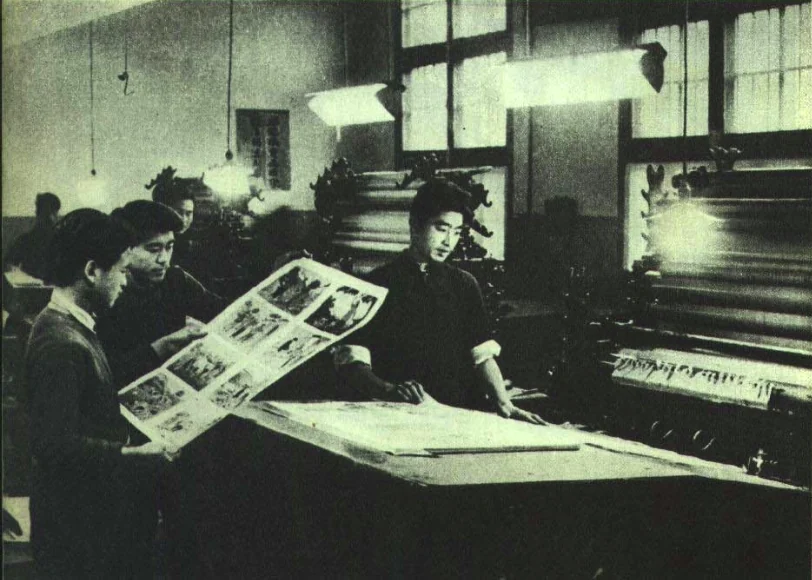
Workers at the Beijing People’s Printing Works, 1953. For them, the factory was also their danwei. Public domain, Wikimedia Commons.
Your danwei was your workplace; for students, the school; for the retired, the neighborhood.
It assigned housing, handed out ration coupons for grain and cloth, and ran clinics.
It organized the mass campaigns and ran birth control programs.
You even needed its permission to marry or divorce.
Sources: Ebrey, Ch. 27, p. 474; Xiaobo Lü and Elizabeth J. Perry, eds., Danwei (1997).
PS · Q2 story · Town and village · 1950–1955
The Marriage Law Let Young People Choose Their Partners and Wives Ask for Divorce
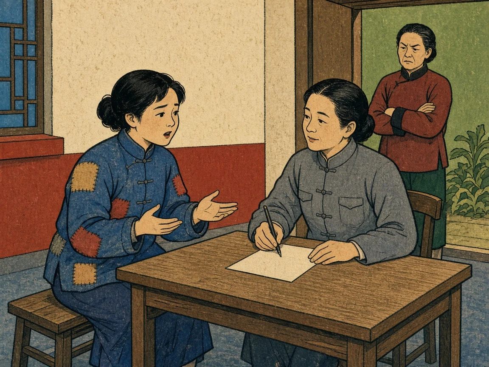
AI-generated illustration made for this deck: a young wife asks a woman official to register her divorce, while her mother-in-law glares from the doorway, early 1950s. An interpretation, not a historical source.
In 1950 the law gave young people the right to choose whom they married. Ch. 24 L3 · divorce ↗
It gave wives the right to ask for divorce, and wives and daughters rights to property.
The Nationalists’ Civil Code of 1930 had said much the same, but the party sent out campaigns to make it real. Ch. 25 L2 · new-laws ↗
In five years several million marriages ended, most at the wife’s request.
Sources: Ebrey, Ch. 27, p. 474; Neil J. Diamant, Revolutionizing the Family (2000).
Jin Shuyu: A Korean Guerrilla Who Became a Beijing Telephone Minder
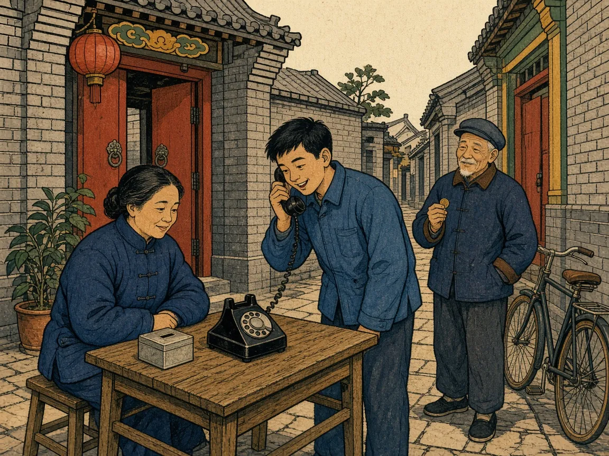
AI-generated illustration made for this deck: Jin Shuyu minds her street’s public telephone in a Beijing lane, as a young man makes a call and a neighbor waits with his coin, about 1958. An interpretation, not a historical source.
Born in 1917 to a Korean family in Manchuria, she ran off as a schoolgirl to fight the Japanese.
She fled to Seoul, taught school, and married a Han Chinese restaurant owner.
In 1953 she crossed back into China with her children; her husband never followed.
From 1958 she minded her street’s public telephone. “I became Han Chinese long ago,” she said.
Sources: Ebrey, Ch. 27, p. 478; Zhang Xinxin and Sang Ye, Chinese Lives (1987).
Self-check · Pierian Spring · Part 1 · not graded
Quick Check: Work Units and Families
Answer each question from memory, out loud or on paper, then click Show answer to check yourself. Nothing here is graded or recorded.
1. Name three things a danwei controlled for a city worker.
Any three of: housing, ration coupons for grain and cloth, birth control programs, mass campaigns, and permission to marry or divorce.
2. What three rights did the 1950 Marriage Law give?
Young people could choose their partners, wives could ask for divorce, and wives and daughters had rights to property.
3. Why did the 1950 law change more lives than the 1930 Civil Code?
The party ran campaigns to publicize it and backed women who refused arranged marriages or left their husbands.
4. What job did Jin Shuyu do from 1958?
She minded her neighborhood’s public telephone for her street committee.
Patricia Buckley Ebrey, A History of China, Chapter 27, "China Under Mao (1949–1976)," pp. 473–479. All page references in this deck are to these pages.
Further reading
Taking power: Frederick C. Teiwes, "The Establishment and Consolidation of the New Regime," in The Politics of China, ed. Roderick MacFarquhar (3rd ed., 2011). Odd Arne Westad, Restless Empire (2012). Gail Hershatter, Dangerous Pleasures (1997). Yang Kuisong, "Reconsidering the Campaign to Suppress the Counterrevolutionaries," China Quarterly 193 (2008).
Korea: Chen Jian, China's Road to the Korean War (1994). David Cheng Chang, The Hijacked War (2020).
The village: Brian DeMare, Land Wars (2019). Edward Friedman, Paul G. Pickowicz, and Mark Selden, Chinese Village, Socialist State (1991). Gail Hershatter, The Gender of Memory (2011). Xiaoping Fang, Barefoot Doctors and Western Medicine in China (2012).
Society: Xiaobo Lü and Elizabeth J. Perry, eds., Danwei (1997). Neil J. Diamant, Revolutionizing the Family (2000). Zhang Xinxin and Sang Ye, Chinese Lives (1987).
Borderlands: Thomas S. Mullaney, Coming to Terms with the Nation (2011). James A. Millward, Eurasian Crossroads (2007). Tsering Shakya, The Dragon in the Land of Snows (1999).
Images (real, via Wikimedia Commons)
All photographs are historical and public domain, except the 2011 monument photograph (CC0) and the monument relief (Francesco Bini, CC BY-SA 4.0). Each caption links its Commons page. The language map is a 1967 U.S. government map.
AI-generated illustrations
gg: a young wife asks a woman official for a divorce, early 1950s. hh: Jin Shuyu minds a Beijing street telephone, about 1958. Both are AI-generated illustrations made for this deck, not historical sources.
A teal dotted word opens a short definition like this one.
Close it with Esc, the × mark, or a click outside the card.
×
Cadre
A cadre (ganbu) is a party or government official, especially one who carries out policy among ordinary people: a team leader, a clerk, a work-team member.
×
Campaign
A campaign (yundong, “movement”) was a burst of mass action the party organized against a target: meetings, posters, accusations, and confessions, usually for a few months, then a new campaign.
×
Counterrevolutionary
A counterrevolutionary was anyone the party said was working against the revolution: former Nationalist officials and officers, secret-society leaders, “bandits,” and people accused of spying.
×
Mutual-aid team
A mutual-aid team was a group of a few neighboring households that swapped labor, tools, and draft animals at busy seasons while each family kept its own land and harvest.
×
Danwei
A danwei (dahn-way) means “work unit”: the factory, office, school, or neighborhood organization through which the state housed, fed, paid, and watched each city resident.